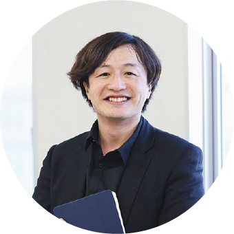
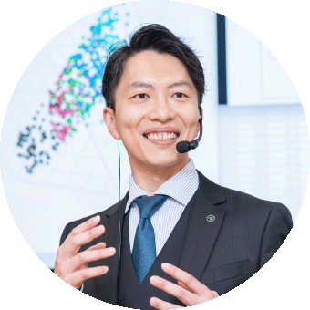
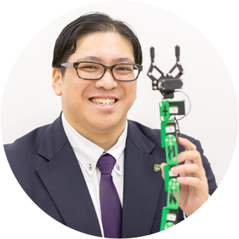
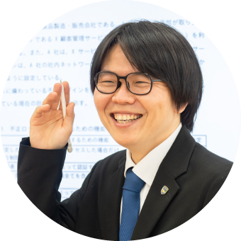
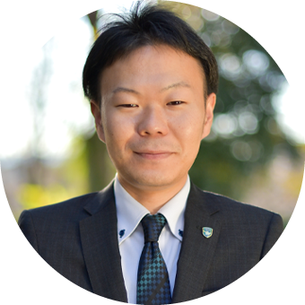
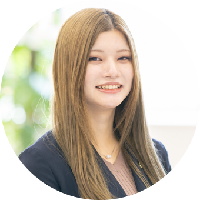
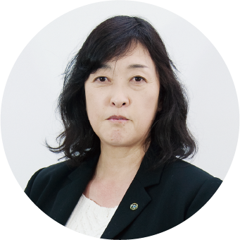
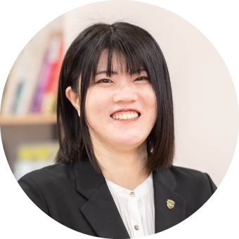

小澤 慎太郎DXデザイン研究所 所長。ITコンサルタントとして社会のDX推進に尽力。TOKYO GAME SHOWなどのPBLや研究を指導。担当：各種専攻研究、プロジェクトマネジメント論、アプリケーション開発実習
内池 雄SEとしての技術を武器に、ギネス記録やテレビ出演のVアイドルをプロデュース。盗難防止システムの特許開発や県警表彰の実績も。担当：データサイエンス、ビジネスソリューション、プレゼンテーション実践
内山 直人空調設備の集中制御装置や駐車場の精算機など、Linuxを使った制御システムの開発に従事。担当：基本情報技術者試験、C言語実習基礎、クラウド基礎・応用、Linux実習基礎吉井 アリス初学者に寄り添った授業が人気。英語やヨガを通した人間力の育成にも力を入れる。担当：コンピュータ概論、英会話、Java基礎、ワークアウト

八木 進吾銀行の運用保守のあと、介護施設のリハビリ記録システムや送迎の最適配車システムを開発。担当：情報セキュリティマネジメント、コンピュータ概論、Linux
柿崎 渉都内のホームセンターで園芸・農業資材を担当。消費者の視点で、食と農を担う人を育てる。担当：農業基礎概論、食品流通論、アグリテック実習白石 尚之外食産業の売上管理システムや、運送業向けロボット点呼の開発でWebアプリ開発に従事。担当：Java応用、PHP実習基礎、Python実習基礎、基本情報技術者試験

狩野 心夢初学者にも分かりやすい授業で、国家試験の学習と「かわいがられる新人」になる人間力を育てる。担当：コンピュータ概論、基本情報技術者試験、Java、Python古澤 龍夜株式会社ドラゴンナイト代表取締役。「ITをオモシロくする」を目指して教える。担当：ゲーム開発、Unity、Unreal Engine
篠崎 恵里DXデザイン研究所 チーフ。産学官と共同研究したデザイン開発の授業を担当。担当：各種専攻研究、プロダクトデザイン

髙橋 由美グラフィックデザイナーとして映像やイラストの仕事を手がけたのち独立。社会人講座の講師も務める。担当：デザイン基礎、デザイン応用善財 綾音企業の企画室でグラフィックデザイナーとして活躍。担当：Illustrator、Photoshop、グラフィックデザイン

大橋 素子マンガ家アシスタント、プロスポーツチームのグラフィックデザインを経験。担当：マンガ、人体構造、Live2D菊田 恵印刷会社のグラフィックデザイナーとして、紙媒体からWebまで幅広く担当。担当：Illustrator、Photoshop、商業デザイン、デザイン入門